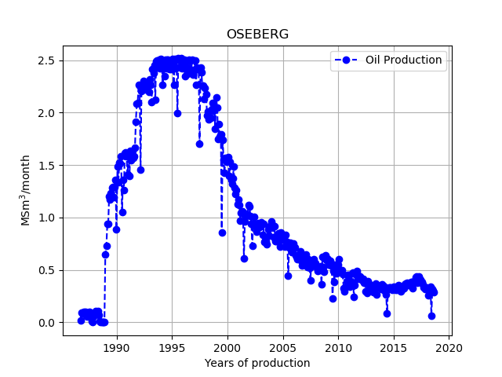

Exercise 1: Install Bedmap to visualize Antarctica ice data
Background
There is currently a great deal of concern about global warming. Some critical issues are whether we are more likely to observe extreme local temperatures, increased frequencies of natural disasters like forest fires and droughts, and if there are "tipping points" in the climate system that are, at least on the human timescale, irreversible [1]. One particular question to ask is: How much ice is likely to melt? And, what would be the consequence of ice melting for sea level rise (SLR)?
Since most of the ice on Planet Earth is located in Antarctica, substantial effort has been spent in mapping the ice and the bedrock of this continent. Most of the data is freely available, and we can use Python to investigate different scenarios. Here we will only show you how to install the packages and visualize the ice thickness.
Part 1.
The ice data are located in the bedmap2 dataset [2] The rockhound library can be used to load the data. As an aid to plotting, you might also want to use color maps from the cmocean package [3]. To install bedmap2 data you have to create a new conda environment (we call it ice)
conda config --add channels conda-forge
conda create -n ice python matplotlib numpy \
scipy xarray==0.19.0 pandas rockhound cmocean pip jupyter
Note that we need a specific version of the xarray library.
conda activate ice
jupyter notebook
Part 2. The code below is taken from the rockound library documentation:
import rockhound as rh
import matplotlib.pyplot as plt
import cmocean
import numpy as np
bedmap = rh.fetch_bedmap2(datasets=["thickness","surface","bed"])
plt.figure(figsize=(8, 7))
ax = plt.subplot(111)
bedmap.surface.plot.pcolormesh(ax=ax,cmap=cmocean.cm.ice,
cbar_kwargs=dict(pad=0.01, aspect=30))
plt.title("Bedmap2 Antarctica")
plt.tight_layout()
plt.show()
- Run the code and reproduce figure 1, modify the code to plot the ice surface or the bed rock.
Figure 1: Visualization of the ice thickness in Antarctica.

- Check out the gallery. Choose one of the datasets, copy and paste the code and reproduce one of the figures in the gallery.
Exercise 2: Matplotlib visualization
To access the data a bit easier I have added a file draugen_pandas.py in the data folder containing our data as lists. We can access them by importing them directly into our script. However, as we are in the src folder it causes a practical problem to access a Python file in a different folder and the only way to do this is to add the data folder to our path
import sys
sys.path.append('../data/')
from draugen_data import years,months,oil,gas,wat,cond,oe
Question1:
- Use matplotlib to plot oil equivalents,
oe, vs theyearsdata, compare with the official data.
Solution:
import matplotlib.pyplot as plt
plt.plot(years,oe)
Question2:
Our plot looks a bit strange, because we do not take into account the month column. Instead of only plotting the year array, plot years+months/12 on the x-axis.
Solution:
Use vanilla Python (hard)
Here we need to loop over all elements and for each year add the month, divided by 12 to convert the month to year. What we want is
- To start with an empty list
year_month=[] - Loop over all elements and add first year and first month divided by 12
We loop over elements using a for loop. The keyword for is always accompanied by the in keyword.
Method 1:
If you have coded before, this might be very familiar.
N=len(years) # N is the length of the years list
year_month=[]
for i in range(N):
year_month.append(years[i]+months[i]/12)
The for-loop above ends with :, and then Python uses indentation (a tab) to indicate a block of code. You have to use the same amount of spaces in the same block of code. The following code will give an error.
for i in range(N):
year_month.append(years[i]+months[i]/12)#Error!! because no indentation
The statement range(N) is a generator and it generates a sequence of integers with length \( N \), starting from zero to \( N-1 \).
Method2:
This method is slightly more pythonic, than the previous. Instead of accessing the different elements in years by years[i], we can loop directly over them
i=0
for year in years:
year_month.append(year+months[i]/12)
i = i+1
The specific name we give the counter, year, is not important for the computer. But if you choose a descriptive name it makes the code easier to read for humans.
The code above is ok, but it seems unnecessary to introduce the extra counter i, the way that we have done it. To access the index of each element in addition to the value, we can use the enumerate() function
for i,year in enumerate(years):
year_month.append(year+months[i]/12)
Method3:
If you have lists of the same length we can access the elements in a loop using the zip function
for month,year in zip(months,years):
year_month.append(year+month/12)
The zip function uses a nice feature in Python, which is called variable unpacking. This is a special assignment operation, where we can assign all variables in a an iterable object in one go e.g.
my_list=[2024,1,9]
year,month,day=my_list #year=2024,month=1,day=9
Method4:
*List comprehension* is a very pythonic way of creating new lists. It allows us to write a for loop while creating a python list.
year_month = [year+month/12 for month,year in zip(months,years)]
- Use one of the methods above
year_month=np.array(year)+np.array(month)/12and create a new plot, withyear_monthon the x-axis. - Try to make the plot as similar as possible to figure 2
Convert list to Numpy arrays and plot (easy)
As we have seen year_month=year+month/12 will not work for lists as Python does not understand what month/12 is, and even if it did the + operation would not give the expected results. But, if we convert our list to a Numpy array, life becomes easy. To convert a list to a Numpy array, we use what programmers calls *casting*. Casting is when we tell the computer to convert a variable from one type to another, e.g.
my_list=[1,2,3]
my_np_array=np.array(my_list) # cast to array
# more examples
a='1' # a is a string
b='2' # b is a string
a+b # gives a new string '12'
int(a)+int(b) # gives integer 3
float(a)+float(b) # gives float 3.0
One of the major strengths of Numpy is that it is vectorized. This means that mathematical operations you do with numbers such as +, -, /, *, you can also do with Numpy arrays with the effect that the operation is done on each element. This only works if the arrays have the same length. The only exception is if one of the elements is a single number, e.g.
# will divide all elements in month by 12
np.array(months)/12
# add first element in year with first element in month/12 and so on
np.array(years)+np.array(months)/12
- Use
year_month=np.array(years)+np.array(months)/12and create a new plot, withyear_monthon the x-axis. - Try to make the plot as similar as possible to figure 2
Figure 2: Production of oil equivalents on the Draugen vs time.

Exercise 3: Group data
If you compare the plot in figure 2 with the official plot, and for convenience illustrated below in figure 3, you will see that they are different. The difference is that the production in figure 2 is per month, whereas in figure 3 the production is per year.
Figure 3: Production of oil equivalents on the Draugen field.
Question: Use the imported data for Draugen, and plot the production per year vs time. That means we want to sum up all oil equivalents when the years have the same value.
Solution1, Vanilla Python (hard):
There are probably many ways of solving this problem, but here we will use a dictionary. The reason we use a dictionary is that there will be an unique key (the year) for each entry. The tricky part is the initialization
- if the key exists in the dictionary, we want to add the oil equivalents to the previous values,
- if the key does not exists (we have not summed the oil equivalents for that year) we need for that key to set the first value.
Thus we need to check if the key already exists
data={} #just an empty dictionary
for year,o in zip(years,oe):
key=year
if key in data: #key exists
data[key] += o #add oil equivalents
else: # new key
data[key] = o #set equal to first month
Next, we need to extract all oil equivalents for each year, and make the plot
oe_per_year=[data[key] for key in data] #list comprehension
year=[key for key in data]
plt.plot(year,oe_per_year)
plt.bar(year,oe_per_year,color='orange')
Solution2, Numpy and Boolean masking (hard):
We can also Boolean masking, if we convert the lists to Numpy arrays. If we want to pick out all data for a specific year, e.g. 2008 and sum the oil equivalents we can do as follows
-
np.array(years) == 2008will giveTruefor all entries containing 2008 andFalseotherwise - If we pass this to our oil equivalent array, only the values corresponding to
Truewill be picked out and then we can quickly sum them bynp.sum
years=np.array(years) # cast to Numpy array
oe=np.array(oe) # ditto
np.sum(oe[years==2008]) # 4.265517 mill Sm^3
Now, we just need to loop over all the years and collect the data
unique_list=np.unique(years) #remove duplicates
oe_tot=[] # empty list
for year in unique_list:
oe_tot.append(np.sum(oe[years==year]))
#make the plot
plt.plot(unique_list,oe_tot)
plt.bar(unique_list,oe_tot,color='orange')
Solution3, Pandas (easy):
To use Pandas we need to make a DataFrame of the data and then we use the groupby function in Pandas, which is extremely powerful.
import pandas as pd
df=pd.DataFrame() # empty DataFrame
df['Year']=years
df['oe']=oe
print(df) # inspect to see what happens
df2=df.groupby(by='Year').sum()
print(df2) # inspect to see what happens
df2.plot.bar() #make the plot
Note that most of the code above was to create the DataFrame. Pandas also has built-in plotting.
Exercise 4: Read tabulated data from file
As part of this project we will look at some of the datasets that are available at the Norwegian Offshore Directorate website.
In the following we will assume that you have a src directory containing all your Python code and a data folder inside your course folder. Thus, if you are in your src folder you can access files in the data folder by moving one folder up an down inside your data folder.
Choose one or more of the exercises below
Pandas (easy):
Pandas will most likely be your first choice, because it has so much built in functionalities- Run the following code and explain why the first
pd.read_csvfails or does not produce the output we want
import pandas as pd
df=pd.read_csv('../data/draugen.txt')
print(df)
df=pd.read_csv('../data/draugen.txt',sep='\t')
print(df)
- Print only the year column from
dfi) using the labelYearand ii)df.columns[0] - Print the column with oil equivalents
numpy.loadtxt (medium):
Numpy.loadtxt is a build in function in Numpy that reads tabulated data. It does not know how to process header lines, and we need to skip them.
import numpy as np
data=np.loadtxt('../data/draugen.txt',skiprows=1)
- How can you print out only the year, month, etc. columns from the
datavariable? - Use
data=np.loadtxt('../data/draugen.txt',skiprows=1,unpack=True), what changes now?
Vanilla Python (hard):
When accessing files, it can be easy to forget to close the file after opening it. This can lead to problems as an open file, in many cases, cannot be accessed by other programs. To avoid this we use the with statement. The following code can be used to print out all the lines of a file, and Python will open and close the file for you
with open("../data/draugen.txt") as my_file:
for line in my_file:
print(line)
After the code is run, the variable line will still hold the last line of the file, which should be '2023\t10\t0.072419\t0.019985\t0\t0.092404\t1.005672\n'. The first two numbers are year (2023) and the month (10), for the rest check the header in the file. The \t means tabular and \n means a newline. In order to parse this line we need to pick out the numbers, the easiest way in Python is to split the line on \t, if you do
data_list=line.split('\t')
print(data_list)
we conveniently get all the elements separated by \t into a list (of strings). To convert a string to a number we can do e.g. float(data_list[0]).
- Modify the following code to extract year, month, and oil equivalents. Remember we need to skip the first header line, which contains only text.
years=[] # empty list
months=[] # empty list
oe=[] # empty list
read_first_line=False
with open("../data/draugen.txt") as my_file:
for line in my_file:
if read_first_line:
data_list=line.split('\t')
years.append(float(data_list[0]))
#same for month
#same for oil equivalents
read_first_line=True
Store the data in a dictionary (optional)
Tabulated data with a header is perfect for a dictionary, here we create a dictionary based on the header in the file.
data_dict={'year':[], 'month':[],'oil':[],'gas':[],'cond':[],'oe':[],'wat':[]}
- modify the code above to store all data in each line in the dictionary. To loop over all entries in the
data_dict, and the list elements indata_list, you can use thezipfunction
for key,data in zip(data_dict,data_list):
data_dict[key].append(float(data))
Exercise 5: Splitting data into files using Pandas
If you open the file field_production_gross_monthly.xlsx in the data folder in Excel, you will see that the field names are listed in the leftmost column.
Question:
Open the file field_production_gross_monthly.xlsx in Pandas and write a new file in the same directory containing only data for a given field.
Solution:
import pandas as pd
df=pd.read_excel('../data/field_production_gross_monthly.xlsx')
field='DRAUGEN'
file_out='../data/'+field+'.xlsx'
df2=df[df[df.columns[0]]==field]
df2.to_excel(file_out,index=False)
The tricky part is perhaps the syntax df[df[df.columns[0]]==field]. To understand it in more detail, start by printing the innermost statements and work from there
print(df.columns[0]) # gives the header of the first column
# gives True for all entries in the first column that contains
# the specific field name (in this case DRAGUEN)
df[df.columns[0]]==field
# Following code is equivalent, we use iloc to specify the first column
df.iloc[:,0]==field
Exercise 6: Splitting all field data into separate files
Question:
Split all production in field_production_gross_monthly.xlsx into different Excel files containing only data from one specific field.
To help you, here are the different steps
- First we need to find a unique list of all field names, this can be done by
fields=df[df.columns[0]].unique() - Then we need to loop over all these fields and perform the operations as in the previous exercise
Solution:
There is one problem, and that is that some of the field names contains a slash /. A / indicates a new directory which does not exists, hence we need to replace the slash with something else
df=pd.read_excel('../data/field_production_gross_monthly.xlsx')
fields=df[df.columns[0]].unique()
for field in fields:
new_name=str.replace(field,'/','')
file_out='../data/'+new_name+'.xlsx'
df2=df[df[df.columns[0]]==field]
df2.to_excel(file_out,index=False)
Exercise 7: Splitting field data into separate files and folder
Splitting the data into different Excel files generates a lot of files in the same directory.
Question:
Use Pathlib to split the data into a different folder. All data should be stored in a folder named tmp_data, the tmp_data should contain a directory named after the field and this folder should contain a file named production_data.xlsx containing only data for that field.
Solution:
df=pd.read_excel('../data/field_production_gross_monthly.xlsx')
fields=df[df.columns[0]].unique() #skip duplicates
data_folder=pt.Path('../tmp_data')
data_folder.mkdir(exist_ok=True)
for field in fields:
new_name=str.replace(field,'/','')
new_path=data_folder / new_name
new_path.mkdir(exist_ok=True)
df2.to_excel(new_path/'production_data.xlsx',index=False)
Bibliography
- V. Masson-Delmotte, P. Zhai, A. Pirani, S. L. Connors, C. Pean, S. Berger, N. Caud, Y. Chen, L. Goldfarb, M. I. Gomis, M. Huang, K. Leitzell, E. Lonnoy, J. B. R. Matthews, T. K. Maycock, T. Waterfield, O. Yelekci, R. Yu and B. Z. (eds.). Climate Change 2021: the Physical Science Basis. Contribution of Working Group I to the Sixth Assessment Report of the Intergovernmental Panel on Climate Change, Cambridge University Press. In Press., 2021.
- P. Fretwell, H. D. Pritchard, D. G. Vaughan, J. L. Bamber, N. E. Barrand, R. Bell, C. Bianchi, R. Bingham, D. D. Blankenship and G. Casassa. Bedmap2: Improved Ice Bed, Surface and Thickness Datasets for Antarctica, The Cryosphere, 7(1), pp. 375-393, 2013.
- K. M. Thyng, C. A. Greene, R. D. Hetland, H. M. Zimmerle and S. F. DiMarco. True Colors of Oceanography: Guidelines for Effective and Accurate Colormap Selection, Oceanography, 29(3), pp. 9-13, 2016.